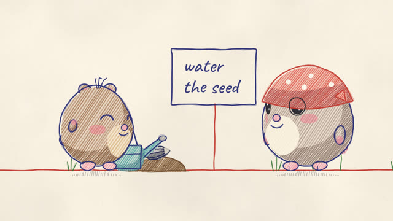
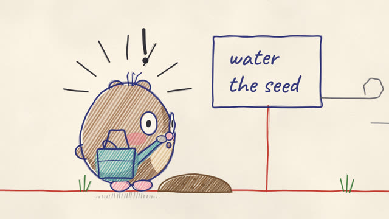
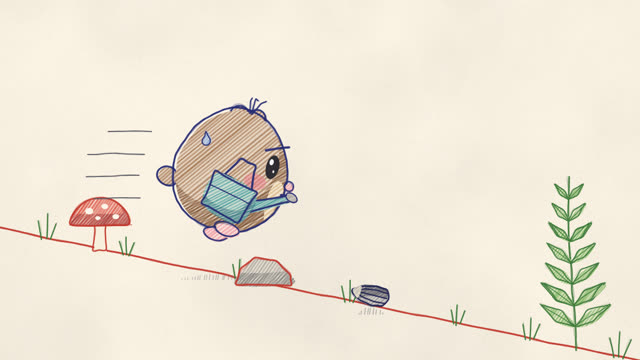
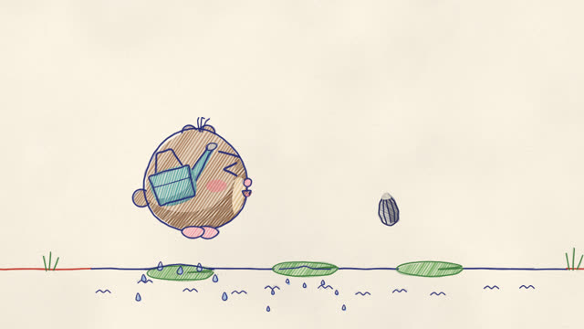
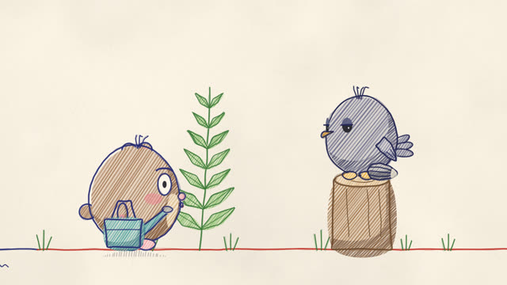
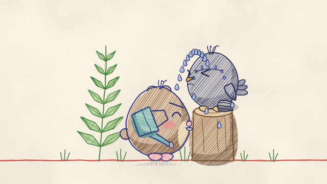
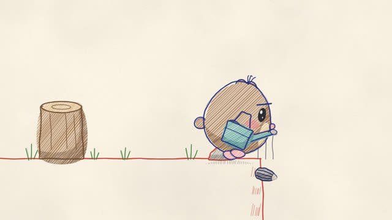
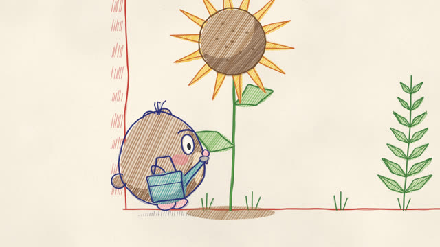
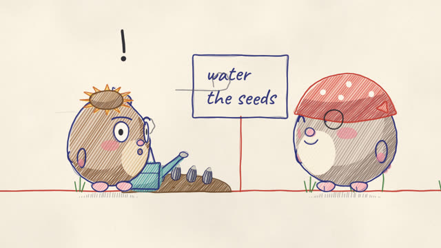

작업 흐름
- 입력
- 주제 하나(씨앗을 맡은 두더지, 빗속의 편지 배달 달팽이, 목도리를 잃은 펭귄 …). 레퍼런스 영상이 있으면 그 스틸
- 브리프
- 지켜야 할 작은 것과 그것이 마지막에 되는 것, 주인공과 소품, 일을 맡기는 표지판 문구, 모양이 다른 장소 3–5곳, 6–10박자, 처음으로 돌아오는 끝을 적은
BRIEF.md - 캐스트
- 주제에 맞게 새로 설계한 동그란 캐릭터 데이터(
cast.js). 공 위에 놓인 눈 · 코 · 팔 · 꼬리가 각도 하나로 함께 돌고, 양쪽 방향 돌려 보기 · 걸음 · 표정 시트로 채점 - 그림
- 두 번 그은 듯 흔들리는 볼펜 선(초당 8번 숨 쉼), 종이가 비치는 색연필 빗금(앞의 것이 뒤의 것을 가림), 카메라가 따라가는 땅 선 하나, 놀람 선 · 땀 · 음표 · 물보라 같은 펜 효과
- 확인
- 무작위 스틸 채점, 콘택트 시트, 모든 샷 그리기 · 빈 프레임 · 결정성 · 관절 범위 · 선 위에 서는지 · 물 위에 서지 않는지 · 이동 방향과 보는 방향 · 화면 안 · 종이가 보이는지 · 악보 검사
- 출력
- 24fps 1080×1080 MP4(피치카토 · 마림바 · 휘파람과 효과음 포함), ♪ 버튼으로 소리까지 재생하는 라이브 페이지
cd ballpoint-doodle-short/examples/seed
node ../../scripts/check.mjs index.html
node ../../scripts/render.mjs cast.html --stills 0 --scale .5
node ../../scripts/render.mjs index.html --sheet 24 --scale .5
node ../../scripts/score.mjs score.js --dur 46.5 --out out/seed.wav
node ../../scripts/render.mjs index.html --workers 4 --audio out/seed.wav
node ../../scripts/new-film.mjs ../../../my-film요구 사항: Node + Playwright Chromium, ffmpeg. 네트워크와 GPU가 필요 없습니다(46.5초 예제를 워커 4개로 약 1분 30초). 단계별 순서는 SKILL.md에 있습니다.
샘플
예제 「Water the Seed」의 아홉 샷, 그 캐스트 시트, 시작 템플릿입니다. 카드를 누르면 새 탭에서 그 순간에 멈춘 장면이 열리고, 브라우저가 볼펜 선부터 직접 그립니다.
Water the Seed 1:1 · 46.5초 · 9샷
할머니가 씨앗을 심고 "water the seed" 표지판을 세웁니다. 두더지 모모가 물을 주다 한눈판 사이 바람이 씨앗을 굴려 가고, 언덕과 연못, 까마귀와 절벽을 지나 씨앗은 해바라기가 됩니다. 원본 영상에 없는 주제와 캐릭터로 브리프부터 끝까지 만든 예제입니다.

drawOn, 이어서 손글씨로 써지는 표지판, 경례




R.where로 구해 물줄기를 까마귀 머리에 맞춤, 흠뻑 젖어 떠는 까마귀, 날갯바람에 떨어지는 씨앗


출발점 캐스트 시트 · 템플릿
새 주제를 시작할 때 쓰는 두 페이지입니다. 캐릭터는 데이터로 설계하고 양쪽 방향 시트로 채점한 뒤에 샷을 씁니다.
실제 작품
이 레포에서 만든 스킬입니다. Kevin Ngo가 X에 올린 80초 영상이 출발점입니다. "watch the egg" 표지판 앞에서 알을 맡은 파란 새가 굴러가는 알을 쫓아 언덕과 폭포, 뱀을 지나고, 알이 깨어나 이야기가 처음으로 돌아가는 영상으로, 모든 프레임을 자바스크립트로 그렸다고 소개되어 있습니다. 이 스킬은 그 그림체(볼펜 선, 색연필 빗금, 크림색 종이, 동그란 캐릭터, 땅 선 하나)와 이야기 문법만 가져오고, 그림은 이 레포의 캔버스 엔진이 그립니다. 예제 「Water the Seed」의 코드와 캐릭터, 이야기, 음악은 모두 이 레포의 것입니다.
링크
- SKILL.md 워크플로
- 폴더 lib · scripts · templates · references · examples
- README.md 빠른 시작
- references/BRIEF.md 주제를 브리프로, 캐스트 검토 기준, 스틸 검토 기준
- references/LOOK.md 원본에서 관찰한 종이 · 두 가지 손 · 땅 선 · 캐릭터 · 움직임 · 소리
- references/STORY.md 심부름 추격 문법, 샷, 타이밍, 샷 표
- references/KIT.md 펜 · 리그 · 땅 선과 소품 · 엔진 · 악보 API
- references/LESSONS.md 겪은 문제와 해결